Research system
ETF Portfolio Research
A reproducible pipeline that optimizes an ETF portfolio, walk-forward backtests it against benchmarks, and renders the whole result as an interactive report — open it below and inspect every assumption for yourself.
Performance
Strategy vs. benchmarks.
| Portfolio | CAGR | Sharpe | Sortino | Max DD | Volatility | Alpha | Beta | Calmar |
|---|---|---|---|---|---|---|---|---|
| Loading metrics… | — | — | — | — | — | — | — | — |
Charts
Twelve views of the same portfolio.
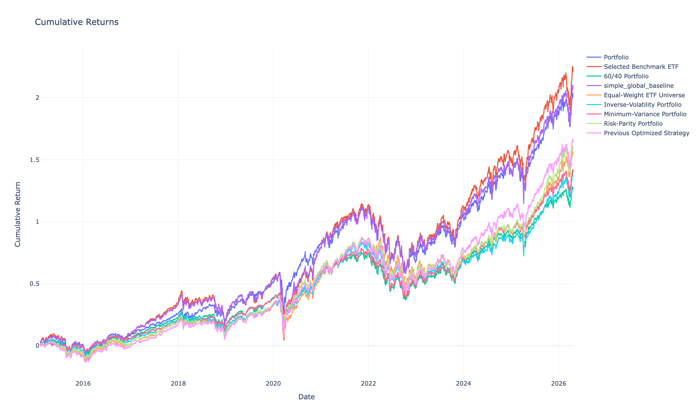
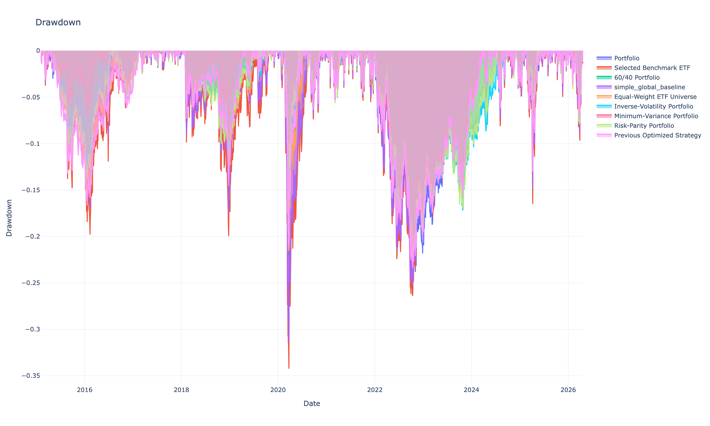
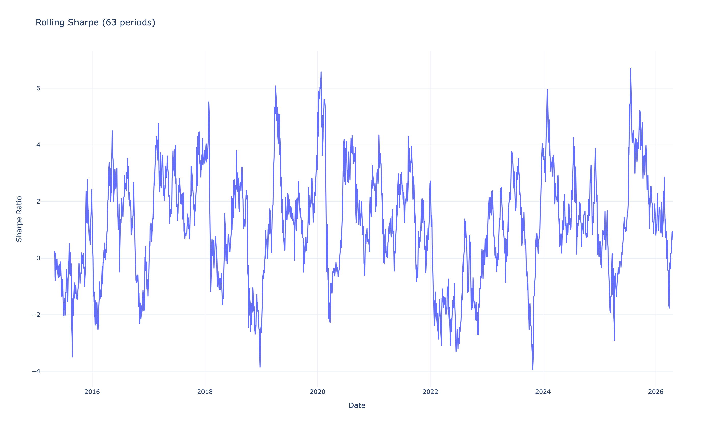
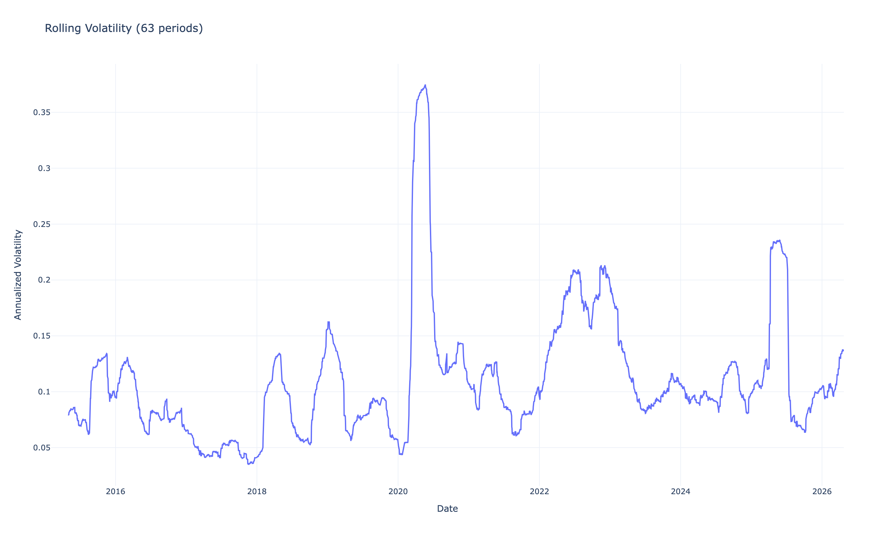
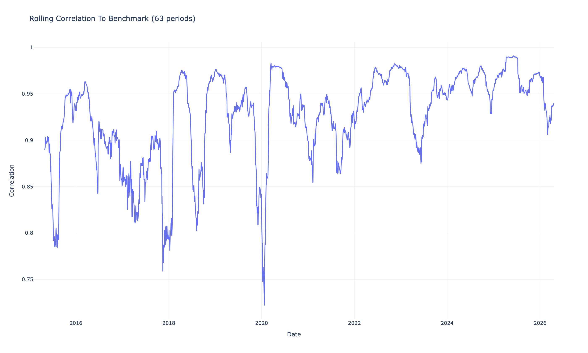
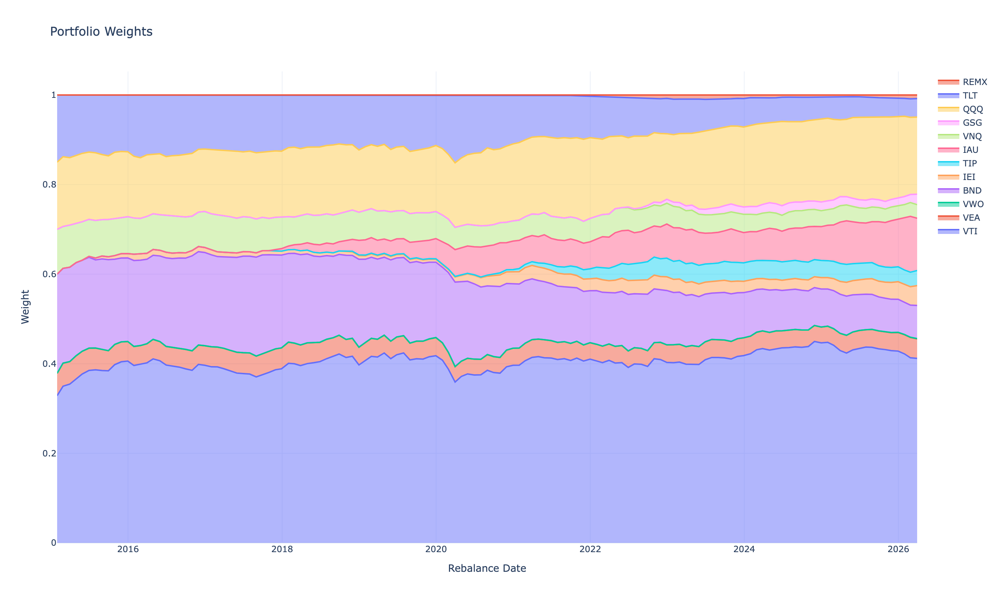
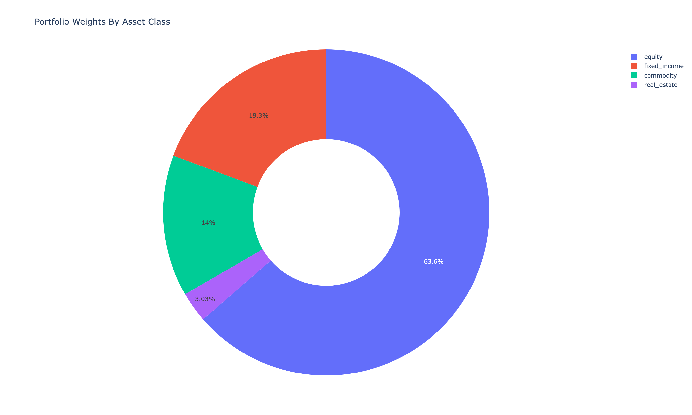
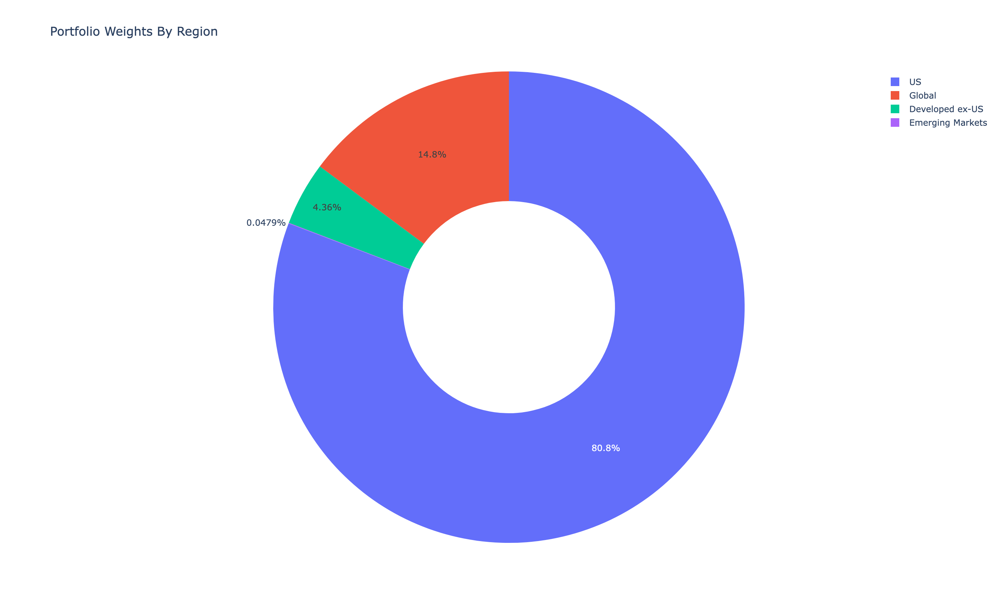
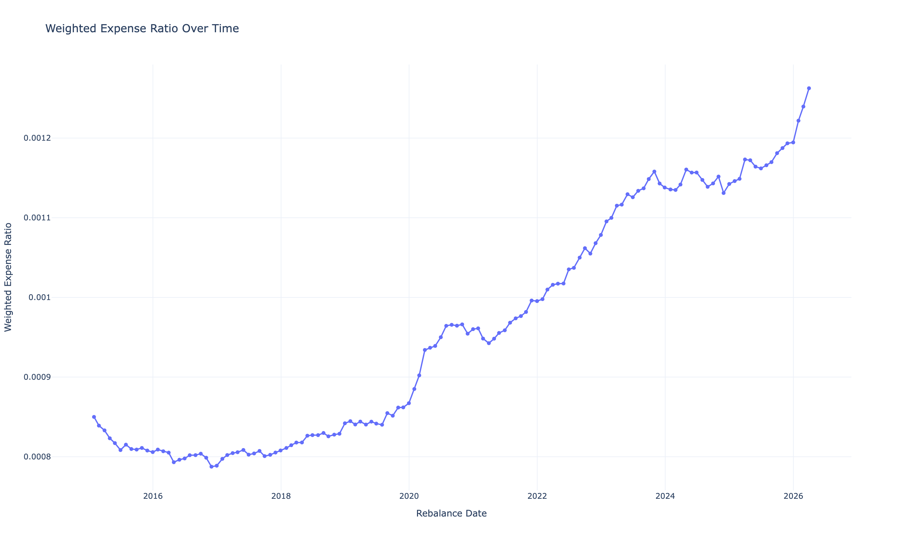
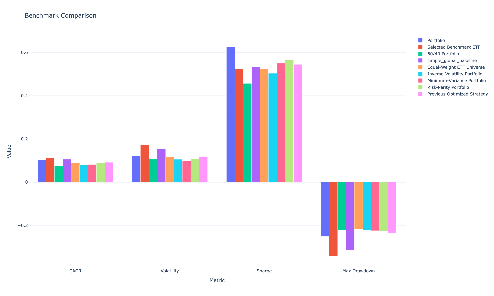
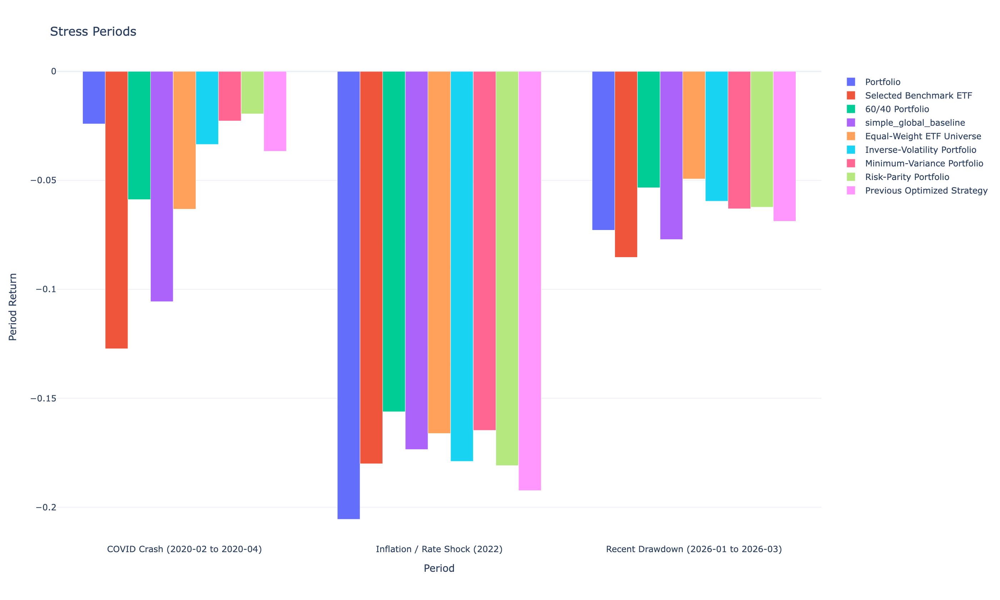
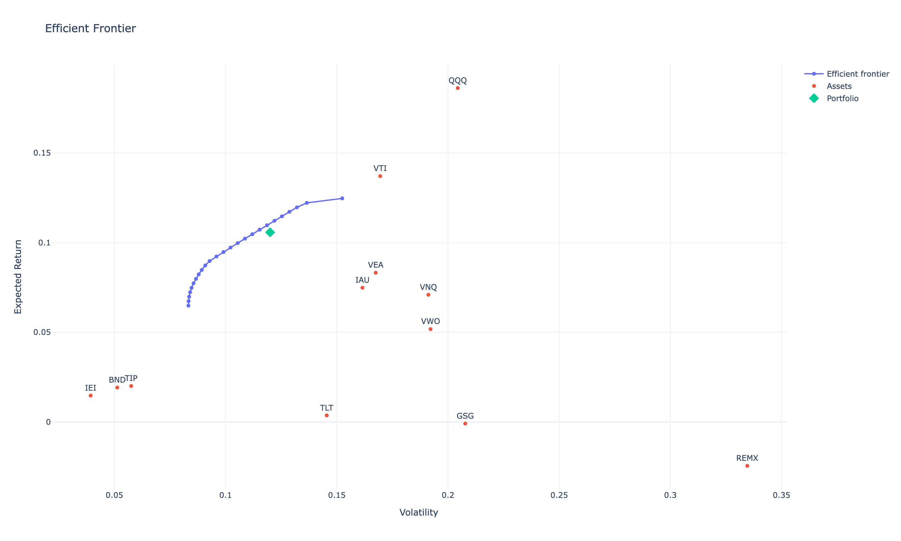
Take it with you
Downloads & provenance.
- Optimized portfolios — optimizer target weights and portfolio composition (.xlsx).
- Portfolio results — per-period backtest holdings and performance (.xlsx).
- Source repository ↗ — the pipeline, configs, and methodology docs that produced everything on this page.
Generated by run — from the committed report artifacts.